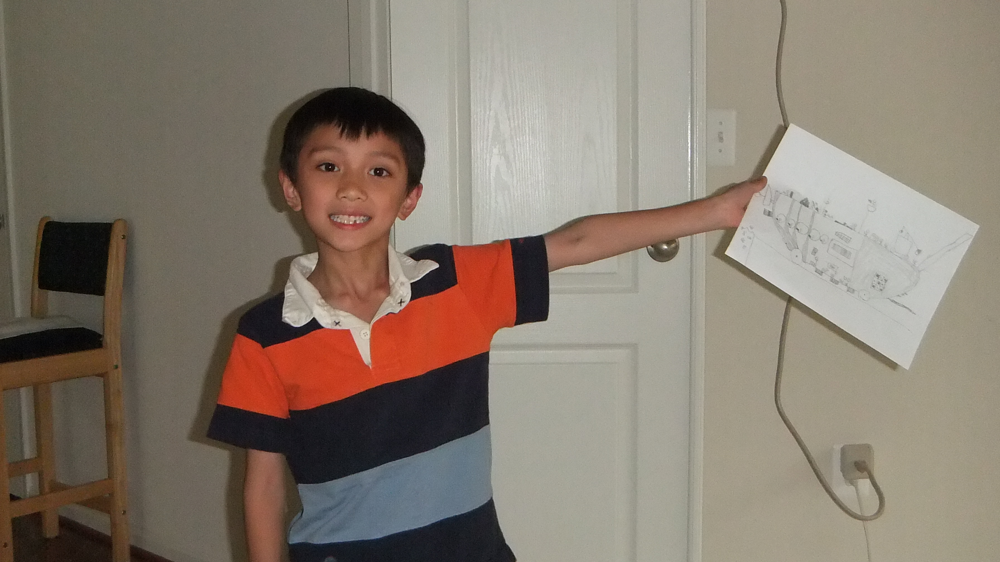

Excerpt
Age: 5
From: Mom's Perspective
"Okay David, try again."
He huffed in annoyance as he sat by the door, untying his shoes for the
umpteenth time, yet to tie his shoes for a single time. He was frustrated.
Whenever we told him he had to learn how to tie his shoes, he never wanted to.
Always saying "I'll do it tomorrow!" Well, tomorrow was here, and he wasn't cooperating.
This time though, I put my foot down. I didn't want to be a Tiger Mom, but he had to
learn how to do these things before he went into first grade.
But he'd put this off for so long, now he felt too old to learn how to tie his shoes, like
it was beneath him - nevermind the fact that he'd yet to figure it out in the first place.
"Mooom..."
I looked back to his shoes, seeing he'd tangled the strings into another unintelligible knot
that would fall apart if a stiff breeze blew on it. For the umpteenth time, I bent down,
untied his shoes, and explained again the proper way to do it...
Erikson's Commentary
In the Industry vs. Inferiority stage, children focus on how they can apply their skills to the real world. This leads to a sense of self-worth or worthlessness, depending on success. In this case, the child felt a lack of worth due to not being able to tie his own shoes, despite being at an age where he perceived that all his peers were able to do so. This feeling of worthlessness demotivated him to learn, as he was reminded of his own self-doubt. Hoewver, support from his parent helped to contribute to regaining a sense of self-worth.
